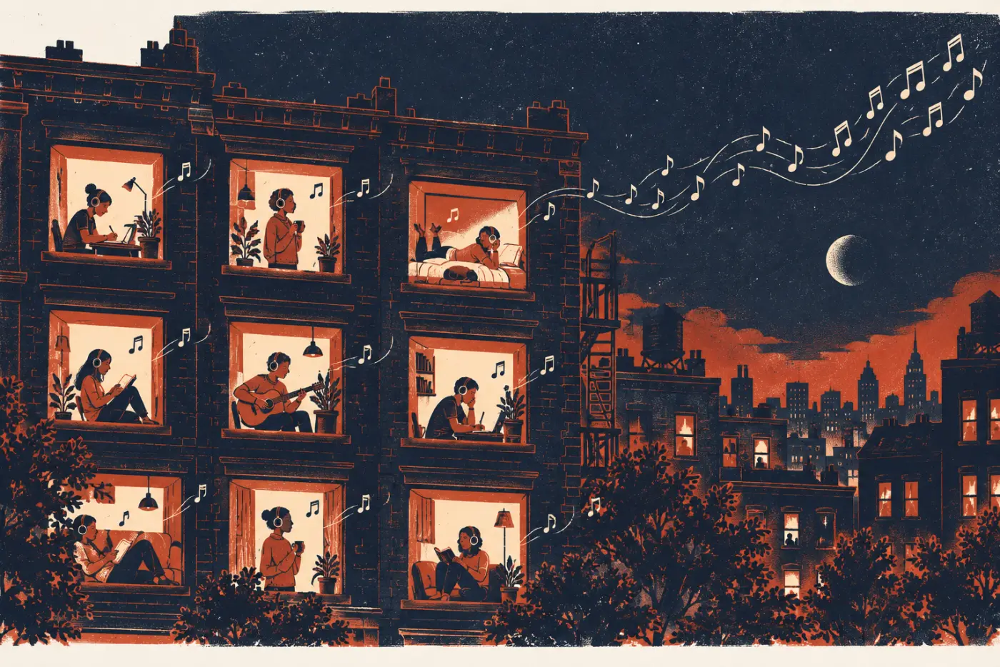
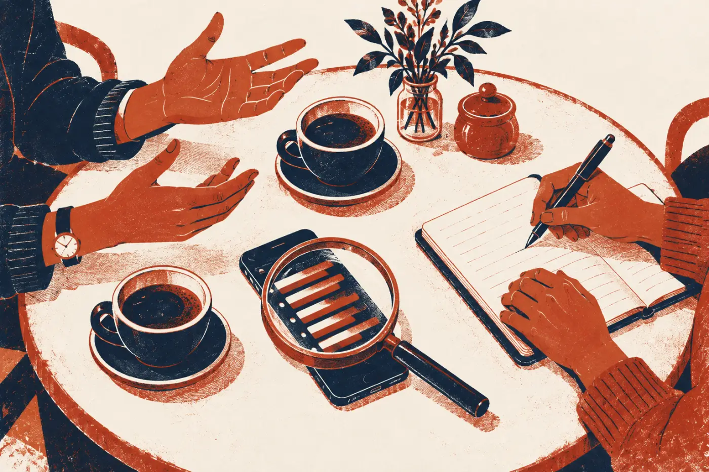
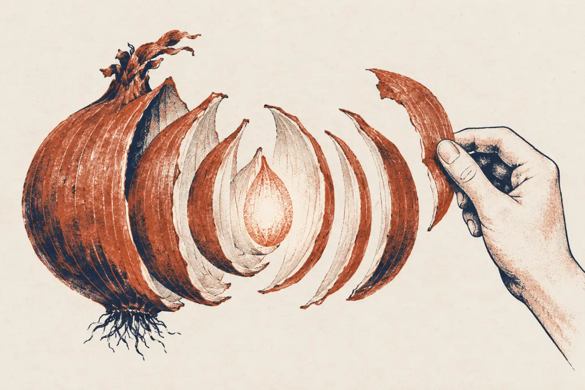
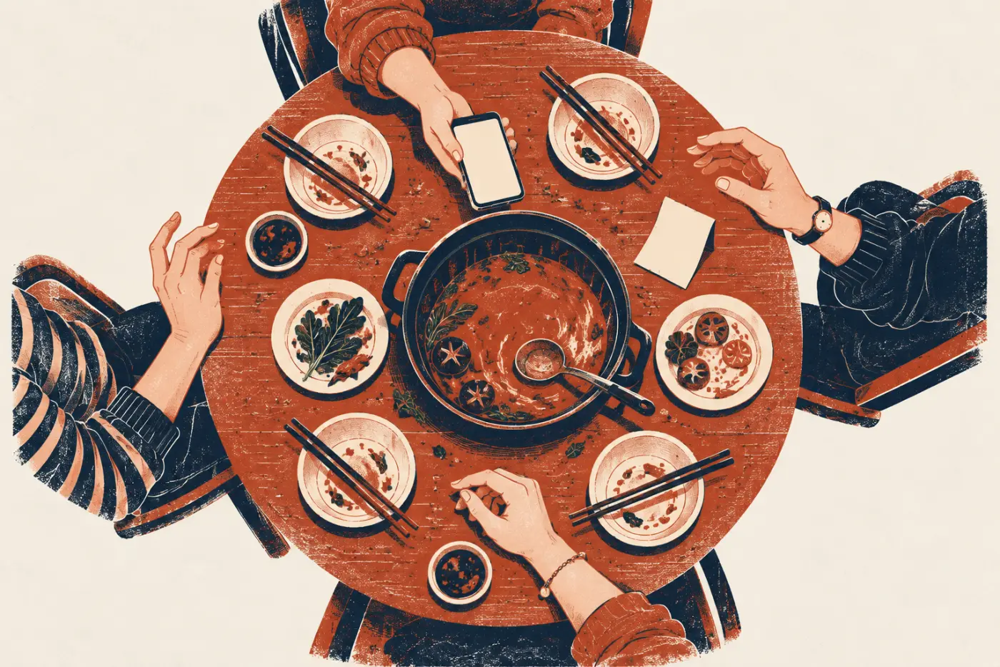

网易云音乐很早就上线了评论功能，一开始并没有火。那时业内普遍觉得：听歌是很私人的事，没人想聊；专业乐评早就没人看了；播放器把歌放好就行。问卷数据也站在这一边。
2014 年，产品经理小明决定自己去分析。他把热门歌单、排行榜、私人 FM 和每日推荐里的歌曲评论翻了个遍。大部分评论只有“好听”两个字，可有价值的那些，几乎都在讲自己：初恋、前任、暗恋、高三、回不去的童年，还有一代人共同的记忆。
先别往下看。下面 10 条评论，你能自己发现这个规律吗？

A 面 · 看见人
AI产品思维第一课：怎么看见真需求

配套视频
写在前面
在 Vibe Coding 第一课里，我们动手之前先问了四个问题：谁会用、在什么场景用、现在怎么解决、多痛多频繁。
麻烦在于，这四个答案常常是我们自己想当然，或者是用户随口一说。这一面讲三招，帮你把答案挖实。
故事都来自网易云音乐：从 2013 年上线起，它是怎样一步步做出来的。
TRACK 01 · 开场
问卷说，几乎没人想评论音乐。后来，评论区成了这个 App 最出名的地方。
网易云音乐很早就上线了评论功能，一开始并没有火。那时业内普遍觉得：听歌是很私人的事，没人想聊；专业乐评早就没人看了；播放器把歌放好就行。问卷数据也站在这一边。
2014 年，产品经理小明决定自己去分析。他把热门歌单、排行榜、私人 FM 和每日推荐里的歌曲评论翻了个遍。大部分评论只有“好听”两个字，可有价值的那些，几乎都在讲自己：初恋、前任、暗恋、高三、回不去的童年，还有一代人共同的记忆。
先别往下看。下面 10 条评论，你能自己发现这个规律吗？

把这 10 条评论分成两堆。电脑上可以直接拖；手机上先点一条评论，再点它该去的那一堆。
写这些评论的人，不是在评价这首歌，而是借一首歌说自己的事。读到的人如果有同样的记忆，就会被打动。小明把这叫作共鸣：用户要的不是“评论音乐”，而是找到有同样记忆的人。
于是团队很快加了一个很简单的功能：给评论点赞。读到心里去的人点一下，写的人马上知道有人懂他。共鸣有了出口，评论区像滚雪球一样火了起来。
TRACK 02 · 第一招
别拿自己的口味代替用户，也别把用户的第一句话当真。
小明自己爱听摇滚，一直觉得电子乐就是迪厅里的“土嗨”。可数据告诉他另一件事：电子歌单的播放量常常轻松破十万，电子乐达人每天打开 App 的次数，远高于一般用户。
他没有等公司的用研团队排期，而是自己去读评论、找达人聊天：什么时候开始听的？去哪里找新歌？和谁一起听？聊完他判断，电子乐会火。团队开始重点扶持电子乐歌单和达人。一年后，《Fade》火遍大街小巷。
找人聊之前，还得先确认找对了人。小明招募访谈对象时，会请对方打开手机，看看听歌记录：记录不会说谎。有人自称资深欧美乐迷，记录里却只有一百多首歌，大多是 KTV 里常唱的华语歌。
做用户研究要过三关：找的是不是典型用户？听到的是不是真话？结论怎么用到产品上？下面练第二关。

小明去一座三线城市，访谈一位许嵩的粉丝。她先介绍了自己。每句话后面，你替小明选一个追问。
在三线城市，接触偶像和核心粉丝圈的机会少，追星更多是一个人的事，还没形成一群人的狂热。如果小明只听她的第一句话，就会把产品做给一个并不存在的“狂热粉”。
TRACK 03 · 第二招
用户提的往往是一个办法。你要找的，是他想要这个办法的原因。
做社区的产品，几乎都收到过同一条需求：“做个勋章系统吧！”很多产品照做了。今天，还有谁记得它们有过勋章？
小明的习惯是先问一句：用户为什么想要勋章？问下去会发现，同一句话背后藏着好几种完全不同的动机。每一种动机，都可能有比勋章更好的办法。
这就是往本质思考：不停在第一层，一层一层往下问。

点洋葱，一层一层剥开“我想要勋章”背后的动机。
五层都剥开了。那，还要做勋章吗？
这五种动机，都能用别的办法满足：想被看见，粉丝数和被推荐更管用；想重新找回动力，就给新的目标和玩法。
而且勋章的新鲜感消退得特别快。粉丝从 1000 涨到 10000、等级从 1 升到 10，那种成就感，勋章比不上。不断设计新勋章，人力成本高，热闹一阵就过去了，攒不下长期的东西。所以小明的结论是：勋章是鸡肋。
先写下你的答案（不打分），再翻开看看负责“跑步 FM”的产品经理发现了什么。
他访谈了一批爱跑步的人，发现两层原因。第一，音乐能把注意力从“好累，还有多远”上移开，让人跑得更久。第二，节奏强的音乐能带着脚步走：步子慢下来时把你拉回节奏，步子稳了还能带你跑快一点。
所以跑步 FM 做成了按步频配歌。动机想清楚了，功能该怎么做也就清楚了。
顺便一招：和组员意见不合时，也可以往上退一层。先对齐“我们想达到什么”，再比较“用哪个办法”，就不会变成观点之争。
TRACK 04 · 第三招
问卷里人人都说需要的功能，上线后却没人用。问题出在哪？
2009 年，小明在一家支付公司做设计师，负责优化“AA 收款”功能。聚餐 AA 太常见了，问卷里几乎人人都说需要一个线上收款工具。
可功能上线后，每天只有很少的人在用，和转账、付款比起来少得可怜。小明把交互改了又改，数据还是上不去。后来手机支付普及了，这个功能依然藏在很深的页面里，很少有人用。
用户没有骗人，他们只是没有深想。要看穿一个需求，可以把它拆成三块：角色（谁在用，谁最需要）、场景（在什么情况下发生）、流程（他要走几步）。

四个人吃完火锅，一共 242 元，其中一个人先买了单。AA 收款这个功能，最该为谁服务？
付钱的人只要点一下就行，没什么麻烦。真正头疼的是收钱的人：要算钱、要通知、要记着谁还没给。所以这个功能的主角是收款方。
再细一点，收款方还分好几种。点开看看：
2009 年的线上 AA 收款，恰好发生在“回到宿舍、打开电脑”之后。它把收钱这件事，从最好开口的饭桌上，搬到了最难开口的时候。
红色的步骤，是收款方最犯难的地方。
线上 AA 收款没有解决最难的那件事：不好意思催钱。它反而让收款方多走了好几步。用户在问卷里说“需要”，是因为没有深想。
TRACK 05 · 用到你的点子上
拿出你自己的点子，用这三招给它做一次体检。
可以用你在 Vibe Coding 课上设计的小工具，也可以从下面三张点子卡里挑一张。
每一栏下面都有一句灰色的示范，照着它的样子写自己的就行。写的时候记住三件事：
追问到具体的经历和数字；问为什么，直到找到动机；拆开角色、场景和流程，和用户现在凑合的办法比一比。
填完可以复制成文字，或者下载成一张图片。浏览器会记住你填的内容，第二课还会接着用。
用户最初是怎么说的？照原样写下来。
每一次都接着上一次的回答往下问，直到问出动机。
会用到它的有哪几种人？谁最需要它？
什么时候、在哪、之前之后发生了什么？越具体越好。
他现在是怎么凑合的？用你的工具又要几步？用“→”把步骤连起来。
收尾